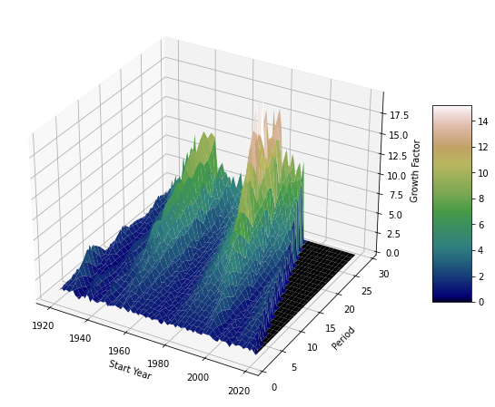

The Passive Investor
Table of Contents
1 Data Informed Approach
1.1 Disclaimer
Past data is not always an indicator of the future. In the words of Sean Ammirati, my professor at CMU, we need to be data informed and not data driven.
1.2 S&P 500 Data
1.3 Assumptions
To keep the analysis simple and build intuition we will start with some assumptions which can relaxed later:
1.3.1 The effects of inflation are cancelled out reinvesting the dividends
1.3.2 We consider a fixed amount invested at a single start date rather than monthly investments
2 Does the stock market grow exponentially?
3 How sensitive are the returns to investment timing?

3.1 Market Entry
3.1.1 Slices
3.2 Investment Period
3.2.1 Slices